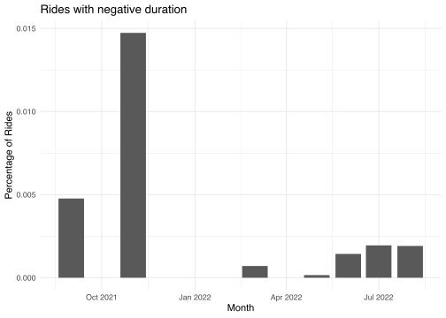
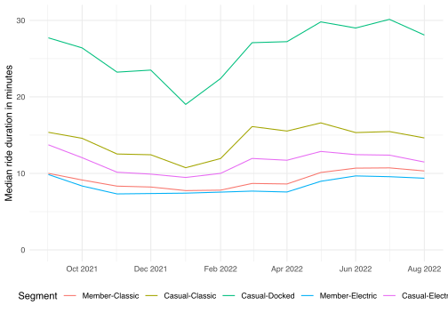
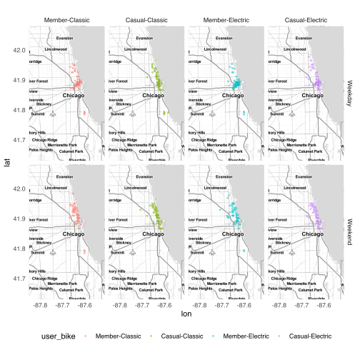

Cyclistic Customer Analysis
Google Data Analytics Certificate Capstone

Background
In 2016 Cyclistic launched a bike-sharing sharing offering which has grown to a fleet of 6000 geotracked bicycles and network of more than 1000 stations across Chicago.
Analysis by Cyclistic’s finance team has determined that riders who purchase annual memberships are more profitable than casual riders.
Head of marketing, Lily Moreno, has set a goal of designing marketing strategies aimed at converting casual riders to members. The intial step is to better understand how casual users and members differ. This information will provide a basis for members of the marketing analytics team to investigate why casual riders might purchase a membership, and how digital media could influence marketing strategy.
The executive team, which is detail oriented, will decide whether the proposed marketing strategies are approved.
Defining the business task
The scope of this analysis is limited to the first step, and investigates the question:
How do annual members and casual riders use Cyclistic bikes differently?
Unpacking this question highlights a number of areas that may provide useful insights.
What defines a member and a casual rider?
The Divvy Bikes pricing information indicates members pay an upfront annual fee to access pricing that includes “no-charge” ride time and lower per minute charges. Casual riders access ride sharing on an ad-hoc basis, paying a per-ride charge, and higher per minute charge which begins when the bike is undocked. Daily pass riders pay a day access fee to access unlimited 3 hour rides for the duration of the pass.
What influence do the plans have on the user behaviour?
Can we distinguish plan types by the average duration of rides? What percentage of riders exceed the included 45 minutes ride time of membership plans? Is this same for members and casuals?
This may help identify if time inclusions are a factor for casual riders considering membership.
When do different user cohorts ride?
Which days, and times are popular for the different cohorts? And are there identifiable differences or commonality in behaviours?
Does weather influence rider behaviour?
Are the types and number of rides related to day-to-day variations in weather or broader seasonal patterns? Are casual users “all season” or “fair weather” riders? Casual riders who ride around the year could be a group that would find membership attractive.
Where do different user cohorts ride?
Riders commuting to work are likely to use docking stations in business districts during the week. Recreational riders may prefer parks and areas along the shoreline or cafe precincts. Docking stations with high levels of usage on different days of the week should provide insight into where user hotspots are located.
Data sources
Divvy Bikes system data and pricing
The base data for individual rides was extracted from Divvy Bike data files covering the period 1 September 2021 to 31 August 2022. Additional data description and a download link is provided on the Divvy Bikes system data page.
The license allows inclusion of data within analyses and studies published for non-commercial. This clause covers the intended use.
Details of current pricing for Divvy Bikes offerings was accessed on 25 September 2022.
NOAA Climate Data
Weather data covering September 2021 to August 2022 ordered from NOOA National Centers for Environmental Information
O’Hare International Airport weather station was selected as representative of the Chicago region.
Divvy Bikes historical station status
Historical station status identifies which stations actively used between September 2021 and August 2022. This information is used to assist identifying Divvy operational rides in the data set.
Data cleaning and preparation
Initial import
The Divvy trip data files have a consistent naming format YYYYMM-divvy-tripdata.zip. This allows file names to be generated for months in the range September 2021 to August 2022.
Code
divvy_files <- seq(
my(params$start_date),
my(params$end_date),
by = "months"
) %>%
enframe(
value = "timestamp"
) %>%
glue_data(
"{year(timestamp)}",
"{stringi::stri_sprintf('%02d', month(timestamp))}",
"-divvy-tripdata.zip"
)To preserve a local copy of the original data, zip files are downloaded to the data/raw folder. The folder is checked each time the script is run, and files which are already present are removed from the download list.
Any files which are not present in the data/rawfolder are downloaded.
Code
file_list <- glue("{params$zip_dir}/{divvy_files}")
files_to_dl <- divvy_files[!file.exists(file_list)]
if (length(files_to_dl) > 0) {
purrr::walk2(
glue("https://divvy-tripdata.s3.amazonaws.com/{files_to_dl}"),
glue("{params$zip_dir}/{files_to_dl}"),
download.file
)
}The first 1000 rows are read from September 2021 zip file. This allows read_csv to determine the type of data in each column. The “guessed” column type specification can then inspected using the spec function.
Code
bike_inspect <- map_dfr(
file_list[1],
~ archive_read(.) %>%
read_csv(
n_max = 1000,
show_col_types = FALSE
)
)
spec(bike_inspect)cols(
ride_id = col_character(),
rideable_type = col_character(),
started_at = col_datetime(format = ""),
ended_at = col_datetime(format = ""),
start_station_name = col_character(),
start_station_id = col_character(),
end_station_name = col_character(),
end_station_id = col_character(),
start_lat = col_double(),
start_lng = col_double(),
end_lat = col_double(),
end_lng = col_double(),
member_casual = col_character()
)The types defined in the column specification appear to be reasonable choices based on naming of the columns.
To verify column naming is consistent across all files, the header row from each file is read. The resulting data frame is processed using distinct() to eliminate duplicated rows. If all headers are identical the resulting data frame will have a single row.
Code
bike_headers <- map_dfr(
file_list,
~ archive_read(.) %>%
read_csv(
n_max = 1,
col_names = FALSE,
show_col_types = FALSE
)
) %>%
distinct()
glimpse(bike_headers)Rows: 1
Columns: 13
$ X1 <chr> "ride_id"
$ X2 <chr> "rideable_type"
$ X3 <chr> "started_at"
$ X4 <chr> "ended_at"
$ X5 <chr> "start_station_name"
$ X6 <chr> "start_station_id"
$ X7 <chr> "end_station_name"
$ X8 <chr> "end_station_id"
$ X9 <chr> "start_lat"
$ X10 <chr> "start_lng"
$ X11 <chr> "end_lat"
$ X12 <chr> "end_lng"
$ X13 <chr> "member_casual"After verifying the detected formats, and checking column naming is consistent across all files, the full dataset can be imported. Passing the full column specification to read_csv() ensure that data which does not match the expected type is flagged as a problem. Issues that arise while importing data can be examined using the problems() function.
Code
bike_rides <- map_dfr(
file_list,
~ archive_read(.) %>%
read_csv(
col_types = cols(
ride_id = col_character(),
rideable_type = col_factor(levels = c(
"classic_bike",
"docked_bike",
"electric_bike"
)),
started_at = col_datetime(),
ended_at = col_datetime(),
start_station_name = col_character(),
start_station_id = col_character(),
end_station_name = col_character(),
end_station_id = col_character(),
start_lat = col_double(),
start_lng = col_double(),
end_lat = col_double(),
end_lng = col_double(),
member_casual = col_factor(levels = c(
"member",
"casual"
))
),
locale = locale(tz = "America/Chicago")
)
)To improve readability rideable_type is renamed to bike_type and the _bike suffix removed from the factor levels. member_casual is renamed to user_type and the factor levels given inital caps. An additional column is added which combines the bike_type and user_type categorical variables.
Code
bike_rides <- bike_rides %>%
mutate(
rideable_type = recode(
rideable_type,
classic_bike = "Classic",
docked_bike = "Docked",
electric_bike = "Electric"
),
member_casual = recode(
member_casual,
member = "Member",
casual = "Casual"
),
user_bike = forcats::fct_cross(member_casual, rideable_type, sep = "-")
) %>%
rename(
bike_type = rideable_type,
user_type = member_casual
)Data inspection
With the data loaded from file, the data structure can checked with glimpse().
Code
glimpse(bike_rides)Rows: 5,883,043
Columns: 14
$ ride_id <chr> "9DC7B962304CBFD8", "F930E2C6872D6B32", "6EF7213790…
$ bike_type <fct> Electric, Electric, Electric, Electric, Electric, E…
$ started_at <dttm> 2021-09-28 16:07:10, 2021-09-28 14:24:51, 2021-09-…
$ ended_at <dttm> 2021-09-28 16:09:54, 2021-09-28 14:40:05, 2021-09-…
$ start_station_name <chr> NA, NA, NA, NA, NA, NA, NA, NA, NA, NA, "Clark St &…
$ start_station_id <chr> NA, NA, NA, NA, NA, NA, NA, NA, NA, NA, "TA13070001…
$ end_station_name <chr> NA, NA, NA, NA, NA, NA, NA, NA, NA, NA, NA, NA, NA,…
$ end_station_id <chr> NA, NA, NA, NA, NA, NA, NA, NA, NA, NA, NA, NA, NA,…
$ start_lat <dbl> 41.89000, 41.94000, 41.81000, 41.80000, 41.88000, 4…
$ start_lng <dbl> -87.68000, -87.64000, -87.72000, -87.72000, -87.740…
$ end_lat <dbl> 41.89, 41.98, 41.80, 41.81, 41.88, 41.88, 41.74, 41…
$ end_lng <dbl> -87.67, -87.67, -87.72, -87.72, -87.71, -87.74, -87…
$ user_type <fct> Casual, Casual, Casual, Casual, Casual, Casual, Cas…
$ user_bike <fct> Casual-Electric, Casual-Electric, Casual-Electric, …The output indicates that the data set has 5,883,043 rows, and 14 columns. The start_station_name, start_stattion_id, end_station_name and end_station_id columns appear to have a number of missing values - identified by NA.
Code
bike_rides %>%
summarise(across(
everything(),
~ sum(is.na(.x))
)) %>%
pivot_longer(
cols = everything(),
names_to = "Column",
values_to = "Missing Count"
)| Column | Missing Count |
|---|---|
| ride_id | 0 |
| bike_type | 0 |
| started_at | 0 |
| ended_at | 0 |
| start_station_name | 884365 |
| start_station_id | 884363 |
| end_station_name | 946303 |
| end_station_id | 946303 |
| start_lat | 0 |
| start_lng | 0 |
| end_lat | 5727 |
| end_lng | 5727 |
| user_type | 0 |
| user_bike | 0 |
Table 1 indicates a significant number of observations are missing end and start station name and id. End station location information is also missing small number of records. All other columns have complete data.
Code
bike_rides %>%
mutate(
missing_start = is.na(start_station_name),
missing_end = is.na(end_station_name)
) %>%
summarise(
"Start Only" = sum(missing_start & !missing_end),
"End Only" = sum(missing_end & !missing_start),
Both = sum(missing_start & missing_end),
"Rides effected" = sum(missing_start | missing_end)
)| Start Only | End Only | Both | Rides effected |
|---|---|---|---|
| 376594 | 438532 | 507771 | 1322897 |
Table 2 indicates that 22.49% of all rides are missing data for at least one docking station. This should be checked to determine whether this is due to error or a systematic reason.
Code
bike_rides %>%
summarise(
start_lat = range(start_lat, na.rm = TRUE),
start_lng = range(start_lng, na.rm = TRUE),
end_lat = range(end_lat, na.rm = TRUE),
end_lng = range(end_lng, na.rm = TRUE)
)| start_lat | start_lng | end_lat | end_lng |
|---|---|---|---|
| 41.64000 | -87.84000 | 41.39 | -88.97 |
| 45.63503 | -73.79648 | 42.37 | -87.50 |
The maximum start longitude and latitude values listed in Table 3 are significantly different to the remaining values. This suggests some rides may have originated outside the Chicago metropolitan area serviced by Cyclistic.
It appears that some latitude and longitude values may have been rounded to two significant digits. Comparing the value to itself rounded to 2 decimal places identifies potentially truncated values. Clamping the coordinates in this way means actual locations can be anywhere within 1 square kilometre area centred on the given grid location.
Code
bike_rides %>%
group_by(Missing = is.na(start_station_id)) %>%
summarise(
Latitude = sum(start_lat == round(start_lat, 2), na.rm = TRUE),
Longitude = sum(start_lng == round(start_lng, 2), na.rm = TRUE)
)| Missing | Latitude | Longitude |
|---|---|---|
| FALSE | 78535 | 78530 |
| TRUE | 884363 | 884363 |
Comparing Table 1 with Table 4 indicates the number of start stations with missing names is the same as those which have rounded coordinates.
Code
bike_rides %>%
group_by(Missing = is.na(end_station_id)) %>%
summarise(
Latitude = sum(end_lat == round(end_lat, 2), na.rm = TRUE),
Longitude = sum(end_lng == round(end_lng, 2), na.rm = TRUE)
)| Missing | Latitude | Longitude |
|---|---|---|
| FALSE | 71004 | 71002 |
| TRUE | 940576 | 940576 |
Comparing Table 1 with Table 5 indicates the combined count of end stations with missing latitude and longitude and those with rounded coordinates matches the count of missing end station names.
This suggests that there is a systemic reason for the missing data, rather than error. It seems likely the location data has been anonymised to protect riders privacy. This needs to be verified with Cyclistics data collection team.
The ride duration and other information appear plausible and the lack of location data does not impact analysis of this data. Records with missing location information will be retained but filtered for any analysis which depends on accurate location.
While the majority of rounded coordinates occur where station names are missing approximately 8% are for stations which are named. These need to be checked during cleaning.
Code
bike_rides %>%
summarise(
start_range = range(started_at),
end_range = range(ended_at)
)| start_range | end_range |
|---|---|
| 2021-09-01 00:00:06 | 2021-09-01 00:00:41 |
| 2022-08-31 23:59:39 | 2022-09-06 21:49:04 |
Table 6 indicates the dataset includes rides which finished after August 2022.
In total 115 rides are active at midnight on 31 August 2022. As these overnight rides cause issues with data visualisation and other analysis, I chose to remove rides which finished after mid
Data Cleaning
Missing end station coordinates
The end stations with missing name and coordinates are addressed first.
Code
no_end_coords <- bike_rides %>%
filter(is.na(end_lat), is.na(end_lng))
no_end_coords %>%
select(
-ride_id,
-starts_with("start_")
) %>%
head()| bike_type | started_at | ended_at | end_station_name | end_station_id | end_lat | end_lng | user_type | user_bike |
|---|---|---|---|---|---|---|---|---|
| Classic | 2021-09-21 15:09:23 | 2021-09-21 16:40:03 | NA | NA | NA | NA | Casual | Casual-Classic |
| Classic | 2021-09-26 08:32:12 | 2021-09-26 11:50:59 | NA | NA | NA | NA | Casual | Casual-Classic |
| Classic | 2021-09-04 13:52:02 | 2021-09-04 17:21:15 | NA | NA | NA | NA | Casual | Casual-Classic |
| Classic | 2021-09-22 10:01:36 | 2021-09-23 11:01:27 | NA | NA | NA | NA | Casual | Casual-Classic |
| Classic | 2021-09-10 22:48:46 | 2021-09-11 23:48:39 | NA | NA | NA | NA | Casual | Casual-Classic |
| Classic | 2021-09-15 01:53:24 | 2021-09-16 02:53:18 | NA | NA | NA | NA | Casual | Casual-Classic |
The preview of these rides contains several rides which extend for more than a day. Cyclistic treat bikes unlocked for more than 24 hours as stolen. These rides are likely to be bikes that have been reported stolen and not physically docked at the ride termination time.
Code
n_e_c <- no_end_coords %>%
group_by(user_type) %>%
summarise(triptime = as.numeric(started_at %--% ended_at, units = "days"), n = n())
n_e_c %>%
ggplot(aes(triptime, fill = user_type)) +
geom_histogram(binwidth = 1) +
scale_y_log10() +
guides(fill = "none") +
facet_grid(rows = vars(user_type)) +
labs(
title = "Rides with missing end coordinates by user type",
x = "Trip Duration in Days",
y = "Rides (log10)"
) +
theme_minimal()Figure 1 shows that the majority of ride with missing end coordinates had a duration of more than 24 hours. Notably casual rides are the biggest contributor.
Cyclistic operational rides
A list of stations that were In-Service between September 2021 and August 2022 was extracted from a dataset maintained by City of Chicago. The dataset for the period of interest contains over 35 million rows recording the status of each docking station at hour intervals.
Due to the size of the dataset the processed listing of stations is used in this analysis.
Code
active_stations <- read_csv(
"data/processed/stations_in_use.csv",
show_col_types = FALSE
)
active_stations %>%
slice_sample(n = 6) %>%
select(-id)| timestamp | station_name | latitude | longitude |
|---|---|---|---|
| 2021-08-31 05:05:35 | Calumet Ave & 51st St | 41.80230 | -87.61805 |
| 2021-08-31 05:05:35 | California Ave & Francis Pl (Temp) | 41.91849 | -87.69742 |
| 2022-05-09 15:14:55 | Ashland Ave & 45th St | 41.81196 | -87.66486 |
| 2021-08-31 05:05:35 | Rockwell St & Eastwood Ave | 41.96590 | -87.69364 |
| 2021-08-31 05:05:35 | Marshfield Ave & 59th St | 41.78683 | -87.66621 |
| 2021-08-31 05:05:35 | Dorchester Ave & 49th St | 41.80577 | -87.59246 |
A random sample of stations from the dataset is shown in Table 8. The timestamp indicates the first time a station appears as In-Service in the original dataset.
The active stations dataset is used to identify stations that were not listed as publicly available.
Code
unlisted_start <- bike_rides %>%
anti_join(
active_stations,
by = c("start_station_name" = "station_name")
) %>%
select(
station_name = start_station_name,
station_id = start_station_id
)
unlisted_end <- bike_rides %>%
anti_join(
active_stations,
by = c("end_station_name" = "station_name")
) %>%
select(
station_name = end_station_name,
station_id = end_station_id
)
unlisted_stations <- unlisted_start %>%
bind_rows(unlisted_end) %>%
drop_na(station_name, station_id) %>%
group_by(station_name, station_id) %>%
summarise(count = n())
unlisted_stations| station_name | station_id | count |
|---|---|---|
| Base - 2132 W Hubbard | Hubbard Bike-checking (LBS-WH-TEST) | 1182 |
| Base - 2132 W Hubbard Warehouse | Hubbard Bike-checking (LBS-WH-TEST) | 963 |
| Bissell St & Armitage Ave - Charging | Bissell St & Armitage Ave - Charging | 38 |
| Bissell St & Armitage Ave - Charging | chargingstx1 | 2 |
| DIVVY CASSETTE REPAIR MOBILE STATION | DIVVY CASSETTE REPAIR MOBILE STATION | 8 |
| Hastings WH 2 | Hastings WH 2 | 5 |
| Lincoln Ave & Roscoe St - Charging | Lincoln Ave & Roscoe St - Charging | 6 |
| NewHastings | 2059 Hastings Warehouse Station | 47 |
| Pawel Bialowas - Test- PBSC charging station | Pawel Bialowas - Test- PBSC charging station | 2 |
| Public Rack - Kedzie Ave & 62nd Pl | 1038 | 1 |
| Throop/Hastings Mobile Station | Throop/Hastings Mobile Station | 3 |
| WEST CHI-WATSON | DIVVY 001 | 21 |
| WEST CHI-WATSON | DIVVY 001 - Warehouse test station | 4 |
| WestChi | DIVVY 001 - Warehouse test station | 6 |
| Wilton Ave & Diversey Pkwy - Charging | Wilton Ave & Diversey Pkwy - Charging | 38 |
Table 9 summarises stations which appear in bike_rides without a corresponding match in the active_stations dataset.
The majority of stations in the table appear to have an operational function. Those ending with “- Charging” appear to be associated with testing of new charging stations prior to the company publicly announcing their availability.
Removing operational and no-return rides
Before proceeding with further manipulation and cleaning, the observations with identified problems should be removed. This is done using dplyr::anti_join() to filter the bike_rides dataset removing items matching those found in the unlisted_stations and no_end_coords data.frames.
Code
bike_rides <- bike_rides %>%
anti_join(
unlisted_stations,
by = c("start_station_name" = "station_name")
) %>%
anti_join(
unlisted_stations,
by = c("end_station_name" = "station_name")
) %>%
anti_join(
no_end_coords,
by = "ride_id"
) %>%
anti_join(
eop_rides_00,
by = "ride_id"
)
bike_rides %>%
slice_sample(n = 6)| ride_id | bike_type | started_at | ended_at | start_station_name | start_station_id | end_station_name | end_station_id | start_lat | start_lng | end_lat | end_lng | user_type | user_bike |
|---|---|---|---|---|---|---|---|---|---|---|---|---|---|
| 4491F65F5920935C | Docked | 2022-06-14 18:31:09 | 2022-06-14 18:45:13 | Montrose Harbor | TA1308000012 | Lakefront Trail & Bryn Mawr Ave | 15576 | 41.96398 | -87.63818 | 41.98404 | -87.65228 | Casual | Casual-Docked |
| F9D6616C1F002007 | Classic | 2021-10-31 19:48:02 | 2021-10-31 19:54:44 | Clark St & Armitage Ave | 13146 | Bissell St & Armitage Ave | 13059 | 41.91831 | -87.63628 | 41.91844 | -87.65222 | Member | Member-Classic |
| 85EE6C005B6B66F1 | Electric | 2022-05-14 15:17:54 | 2022-05-14 15:31:51 | Racine Ave & 18th St | 13164 | Clinton St & 18th St | TA1307000044 | 41.85817 | -87.65646 | 41.85795 | -87.64083 | Casual | Casual-Electric |
| F6F76CB4352D36EF | Electric | 2021-09-17 16:04:44 | 2021-09-17 16:10:12 | Dearborn St & Monroe St | TA1305000006 | NA | NA | 41.88091 | -87.62995 | 41.89000 | -87.64000 | Member | Member-Electric |
| 64F75E71354B8D5F | Classic | 2021-09-20 17:50:10 | 2021-09-20 17:55:16 | Orleans St & Chestnut St (NEXT Apts) | 620 | Larrabee St & Division St | KA1504000079 | 41.89820 | -87.63754 | 41.90349 | -87.64335 | Casual | Casual-Classic |
| BC272B92B6575860 | Electric | 2022-07-27 11:42:07 | 2022-07-27 11:47:39 | Wolcott Ave & Polk St | TA1309000064 | Throop St & Taylor St | 13139 | 41.87135 | -87.67364 | 41.86897 | -87.65914 | Member | Member-Electric |
Table 10 shows a sample of the dataset after initial cleaning.
Named stations with rounded coordinates
Some named stations were found to have rounded location coordinates. Additionally there is some inaccuracy of reported location coordinates.
To rectify this, the location and id information for each active station was joined to the rides dataset based on station name.
Joining the active_station data also replaces inaccurate bike GPS location data which clusters around stations with a single official location per docking station.
Code
bike_rides <- bike_rides %>%
left_join(
active_stations,
by = c("start_station_name" = "station_name")
) %>%
select(-timestamp) %>%
left_join(
active_stations,
by = c("end_station_name" = "station_name"),
suffix = c("_start", "_end")
) %>%
select(-timestamp) %>%
distinct(ride_id, .keep_all = TRUE) %>%
mutate(
latitude_end = if_else(
is.na(latitude_end),
end_lat,
latitude_end
),
longitude_end = if_else(
is.na(longitude_end),
end_lng,
longitude_end
),
latitude_start = if_else(
is.na(latitude_start),
start_lat,
latitude_start
),
longitude_start = if_else(
is.na(longitude_start),
start_lng,
longitude_start
)
) %>%
select(-ends_with("_lng"), -ends_with("_lat"))Code
ss <- bike_rides %>%
mutate(
missing = if_else(
!is.na(start_station_name),
"Named",
"Unnamed"
),
ride_day = date(started_at)
) %>%
select(ride_day, missing, latitude_start, longitude_start) %>%
group_by(missing, latitude_start, longitude_start) %>%
summarise(
rides = n(),
avg_rides = rides / n_distinct(ride_day),
.groups = "drop"
)
bounding_box <- ss %>%
summarise(
left = min(longitude_start) - 0.01,
bottom = min(latitude_start) - 0.01,
right = max(longitude_start) + 0.01,
top = max(latitude_start) + 0.01
) %>%
unlist()
chi_map <- get_stamenmap(
bounding_box,
maptype = "toner-lite"
)Code
ggmap(chi_map) +
geom_point(
data = ss,
aes(
longitude_start,
latitude_start,
colour = missing
),
size = 1,
alpha = 0.75
) +
facet_grid(cols = vars(missing)) +
guides(colour = "none") +
scale_colour_manual(values = c("#52854C", "#D16103")) +
labs(
title = "Named and Unnamed Station locations",
x = "Longitude",
y = "Latitude"
) +
theme_minimal()Ride duration
Adding Ride Duration, Time and Day of Week
To aid analysis of temporal variation in cohort behaviour, calculated columns for the ride duration, and the hour, day, and month each ride started are added to the dataset.
Code
bike_rides <- bike_rides %>%
mutate(
ride_int = started_at %--% ended_at,
ride_time = as.duration(ride_int),
month = floor_date(as.Date(started_at, tz = "America/Chicago"), "month"),
hour = hour(started_at),
dayw = wday(started_at, label = TRUE),
daym = day(started_at),
.before = start_station_name
)
bike_rides %>%
select(-ride_id, -ride_int) %>%
slice_sample(n = 6)| bike_type | started_at | ended_at | ride_time | month | hour | dayw | daym | start_station_name | start_station_id | end_station_name | end_station_id | user_type | user_bike | id_start | latitude_start | longitude_start | id_end | latitude_end | longitude_end |
|---|---|---|---|---|---|---|---|---|---|---|---|---|---|---|---|---|---|---|---|
| Electric | 2021-10-11 13:24:16 | 2021-10-11 13:27:22 | 186s (~3.1 minutes) | 2021-10-01 | 13 | Mon | 11 | NA | NA | NA | NA | Member | Member-Electric | NA | 41.80000 | -87.59000 | NA | 41.79000 | -87.60000 |
| Classic | 2021-09-04 19:41:54 | 2021-09-04 19:55:39 | 825s (~13.75 minutes) | 2021-09-01 | 19 | Sat | 4 | Larrabee St & Armitage Ave | TA1309000006 | Broadway & Barry Ave | 13137 | Casual | Casual-Classic | 288 | 41.91808 | -87.64375 | 300 | 41.93758 | -87.64410 |
| Electric | 2021-12-24 16:28:58 | 2021-12-24 16:47:56 | 1138s (~18.97 minutes) | 2021-12-01 | 16 | Fri | 24 | NA | NA | Kosciuszko Park | 15643 | Casual | Casual-Electric | NA | 41.97000 | -87.76000 | 499 | 41.93059 | -87.72378 |
| Classic | 2021-09-26 10:53:31 | 2021-09-26 11:09:00 | 929s (~15.48 minutes) | 2021-09-01 | 10 | Sun | 26 | Campbell Ave & North Ave | 13257 | Kedzie Ave & Milwaukee Ave | 13085 | Casual | Casual-Classic | 160 | 41.91054 | -87.68956 | 260 | 41.92957 | -87.70786 |
| Classic | 2021-10-09 23:00:31 | 2021-10-09 23:14:59 | 868s (~14.47 minutes) | 2021-10-01 | 23 | Sat | 9 | New St & Illinois St | TA1306000013 | Kingsbury St & Erie St | 13265 | Casual | Casual-Classic | 26 | 41.89085 | -87.61862 | 74 | 41.89381 | -87.64170 |
| Electric | 2021-09-27 07:46:47 | 2021-09-27 07:56:19 | 572s (~9.53 minutes) | 2021-09-01 | 7 | Mon | 27 | Aberdeen St & Jackson Blvd | 13157 | Franklin St & Illinois St | RN- | Member | Member-Electric | 21 | 41.87773 | -87.65479 | 672 | 41.89102 | -87.63548 |
Table 11 shows a sample of the resulting dataset with added columns. Minimum and maximum ride times can now be checked for plausibility.
Code
bike_rides %>%
summarise(
Minimum = min(ride_time) / 3600,
Maximum = max(ride_time) / 3600
)| Minimum | Maximum |
|---|---|
| -2.290278 | 678.4169 |
Both minimum and maximum ride durations indicate the data set contains values which need to be checked, and possibly removed. Ride times of less than zero should not occur and ride times of 28 days are very unlikely given the accrued charges would be around $6500 at casual trip rates.
Addressing negative ride durations
Code
bike_rides %>%
group_by(month) %>%
summarise(
nrt = mean(ride_time < 0) * 100
) %>%
ggplot(aes(month, nrt)) +
geom_col() +
theme_minimal() +
labs(
title = "Rides with negative duration",
x = "Month",
y = "Percentage of Rides"
)
Code
bike_rides %>%
group_by(
Month = month,
Day = daym
) %>%
summarise(
"Percent Negative" = mean(ride_time < 0) * 100,
.groups = "drop"
) %>%
filter(`Percent Negative` > 0) %>%
slice_max(`Percent Negative`, n = 6)| Month | Day | Percent Negative |
|---|---|---|
| 2021-11-01 | 7 | 0.2781276 |
| 2021-09-01 | 29 | 0.0930941 |
| 2022-07-01 | 26 | 0.0466781 |
| 2022-06-01 | 7 | 0.0436660 |
| 2022-08-01 | 27 | 0.0217675 |
| 2021-09-01 | 1 | 0.0159962 |
Figure 3 and Table 13 show that the percentage rides with negative durations is around three times higher on 7th November than the next highest day - 29th September.
Code
bike_rides %>%
filter(
month(started_at) == 11,
day(started_at) == 7
) %>%
group_by(Hour = hour(started_at)) %>%
summarise(
"Percent Negative" = mean(ride_time < 0) * 100,
Count = sum(ride_time < 0)
) %>%
filter(`Percent Negative` > 0)| Hour | Percent Negative | Count |
|---|---|---|
| 1 | 10.51587 | 53 |
Table 14 shows that all negative ride durations on 7th November were taken between 1.00am and 2.00am. This coincides with the end of daylight savings in Chicago. At 2.00am clocks went back one hour to 1.00am.
Ride start and end timestamp values in the dataset do not include timezone information. Timestamps between 1.00am and 2.00am could refer to either Central Daylight Time or Central Standard Time meaning there is an ambiguity which is very difficult to resolve.
The negative duration of rides which start and end between 1.00am and 2.00am can be resolved by adding 60 minutes. However the ambiguity of the rides which have one end point in this time range remains.
I recommend that timezone be recorded as part of the timestamp in future to avoid these issues.
For the present analysis I’ve chosen to correct the negative timestamps between 1.00am and 2.00am and to leave the ambiguous timestamps unaltered.
Code
bike_rides <- bike_rides %>%
mutate(ride_time = if_else(
(ride_time < 0) & (date(started_at) == date("2021-11-07")),
ride_time + 3600,
ride_time
))Other ride duration issues
The Cyclistic website indicates that rides of less than 60 seconds have been removed from the dataset. Cyclistic help pages note that if rides exceed 24 hours the bike is treated as stolen and the user can be fined $1200.
These types of rides should not be present.
Code
bike_rides %>%
summarise(
"< 60 seconds" = sum(ride_time < 60),
"> 24 hours" = sum(ride_time > 86000)
)| < 60 seconds | > 24 hours |
|---|---|
| 110497 | 429 |
The significant number of short trips indicate these have not been removed from the data prior to upload. These short rides and rides which can be classified as stolen are removed.
Code
bike_rides <- bike_rides %>%
filter(
ride_time > 60,
ride_time < 86000
)With cleaning completed the processed dataset is saved as a RDS file.
Code
write_rds(bike_rides, "data/processed/bike_rides.rds", compress = "gz")
bike_rides <- read_rds("data/processed/bike_rides.rds")Analysis
Ride duration
Code
basic <- bike_rides %>%
group_by(
user_bike,
month
) %>%
summarise(
rides = n(),
duration = median(as.numeric(ride_time, units = "minutes"))
)Code
basic %>%
ggplot(
aes(
month, duration,
group = user_bike,
colour = user_bike
)
) +
geom_line() +
scale_x_date(
breaks = scales::breaks_width("2 months"),
labels = scales::label_date("%b %Y", tz = "America/Chicago")
) +
ylim(0, 30.5) +
labs(
x = NULL,
y = "Median ride duration in minutes",
colour = "Segment"
) +
theme_minimal() +
theme(legend.position = "bottom")
Figure 4 shows the median ride time for each month for the five combinations of bicycle and user type. Member rides are consistently shorter than casual rides.
Casual-Docked consistently has the longest median ride duration and appears to identify rides taken on a day pass. For this analysis I have assumed that Casual-Docked rides are primarily visitor traffic and are unlikely to take up membership. These rides excluded from further analysis.
Code
day_rides <- bike_rides %>%
filter(bike_type != "Docked") %>%
mutate(weekend = if_else(
dayw %in% c("Sat", "Sun"),
"Weekend",
"Weekday"
)) %>%
group_by(
user_bike,
yday = floor_date(started_at, "day")
) %>%
summarise(
weekend,
n = n(),
duration_mins = as.numeric(median(ride_time)) / 60
) %>%
distinct()
m <- day_rides %>%
group_by(
user_bike,
weekend
) %>%
summarise(
mean_duration = mean(duration_mins)
)Code
day_rides %>%
ggplot(
aes(
duration_mins,
colour = weekend,
group = weekend,
alpha = 0.7
)
) +
geom_density() +
geom_vline(
data = m,
aes(
xintercept = mean_duration,
colour = weekend,
alpha = 0.8
),
linetype = 2
) +
facet_grid(
rows = vars(user_bike)
) +
guides(
alpha = "none"
) +
xlim(5, 25) +
labs(
x = "Median daily ride duration",
colour = "Day Type"
) +
theme_minimal() +
theme(
legend.key = element_blank(),
legend.position = "bottom"
)
The distribution of ride durations in Figure 5 shows a clear bimodal distribution for member ride duration taken on weekdays. This reflects shorter median duration for rides taken between November and April illustrated by Figure 4, compared with the May to October period.
A weaker bimodal distribution is evident in weekend member rides and casual rides.
Both member and casual groups electric bikes have a shorter ride duration than classic bikes.
Cyclistic pricing changed on 10 May 2022. The changes reduced the casual unlock fee from $3.30 to $1.00 and removed 30 minutes included time for classic bikes and e-bike trips. There is an indication that the median duration for Casual-Classic and Casual-Electric trips has declined from May 2022 onwards.
Seasonal influence
Member and Casual riding patterns appear to be sensitive to seasonal influences.
Code
basic %>%
filter(
user_bike != "Casual-Docked"
) %>%
ggplot(aes(
month, rides,
group = user_bike,
colour = user_bike
)) +
geom_line() +
scale_y_continuous(
breaks = scales::breaks_width(50000),
labels = scales::label_comma()
) +
scale_x_date(
breaks = scales::breaks_width("2 months"),
labels = scales::label_date("%b %Y", tz = "America/Chicago")
) +
labs(
x = NULL,
y = "Rides per month",
colour = "Segment"
) +
theme_minimal() +
theme(legend.position = "bottom")
The number of rides taken by all cohorts is lowest in January and February, which coincides with the winter season. Peak ride months cover May, June, July, and September with a slight decline during August.
Code
br_season <- bike_rides %>%
mutate(
season = as.factor(case_when(
month(started_at) %in% c(9, 10, 11) ~ "Autumn",
month(started_at) %in% c(12, 1, 2) ~ "Winter",
month(started_at) %in% c(3, 4, 5) ~ "Spring",
month(started_at) %in% c(6, 7, 8) ~ "Summer"
)),
season = fct_relevel(season, c("Autumn", "Winter", "Spring", "Summer"))
) %>%
filter(
user_bike != "Casual-Docked"
)
br_season %>%
group_by(
user_bike,
season,
dayw,
) %>%
summarise(
avg_rides = n() / n_distinct(date(started_at)),
.groups = "drop"
) %>%
ggplot(
aes(
dayw,
avg_rides,
group = user_bike,
colour = user_bike
)
) +
geom_line() +
labs(
x = "Day of the week",
y = "Average daily rides",
colour = "Segment"
) +
facet_grid(rows = vars(season)) +
theme_minimal() +
theme(legend.position = "bottom")
One of the notable features of winter is the consistent number of daily rides taken by members despite the cold. Members take consistently more weekday rides in all seasons. Peak days for rides on causal plans are weekends - Saturday and Sunday - with a larger of rides taken on Fridays during the summer months.
Code
weather <- read_csv(
"data/raw/chicago_climate_data_noaa.csv",
show_col_types = FALSE,
name_repair = janitor::make_clean_names
) %>%
filter(station == "USW00094846")
rides_temp <- day_rides %>%
inner_join(
select(
.data = weather,
date,
tavg,
tmin,
tmax,
awnd,
prcp
),
by = c("yday" = "date")
)
rides_temp %>%
ggplot(aes(tmax, n, group = user_bike)) +
geom_point(alpha = 0.5) +
geom_smooth(color = "red", alpha = 0.5) +
facet_grid(
rows = vars(user_bike),
cols = vars(weekend)
) +
theme_minimal() +
labs(
x = "Maximum Temperature (Degrees C)",
y = "Rides"
)
The influence of maximum daily temperatures on number of rides across weekdays and weekends shown in Figure 8.
Casual classic bike ride numbers remain low when the maximum temperature is 10°C or below. Casual e-bike rides start increasing when the maximum temperature reaches 0°C. Casual ride numbers appear to decline once the maximum temperature reaches 30 degrees.
Weekday member rides remain at a consistent level right though winter with similar numbers of electric and classic rides taken. Members show a slight preference for E-bikes when the maximum temperature is below 5°C. Weekend member ride numbers are around 25% lower.
Peak ride numbers occur on days when the maximum temperature is between 25 and 35°C. E-bike ride numbers peak at higher maximum temperatures than classic bikes.
This suggests that E-bikes encourage casual users to ride when maximum temperatures are in the range of 0°C to +15°C and during hot weather.
Overall, members appear to be less influenced by temperature and seasonal variation than casuals. Member rides have a consistent base of around 2000 rides per weekday through winter. Ride numbers begin to steadily increase once the daily maximum temperature reaches 0°C.
Casual riders who are using E-bikes in cold and hot temperatures on weekdays appear to have similar behaviours to members in that they will ride in a broad range of weather conditions. Riders in this segment who ride several times a month may be candidates for membership.
Time of day
Code
br_season %>%
mutate(
weekend = if_else(
dayw %in% c("Sat", "Sun"),
"Weekend",
"Weekday"
)
) %>%
group_by(
user_bike,
weekend,
season,
hour
) %>%
summarise(
avg_rides = n() / n_distinct(date(started_at)),
.groups = "drop"
) %>%
ggplot(
aes(
hour,
avg_rides,
group = user_bike,
colour = user_bike
)
) +
geom_line() +
labs(
x = "Time of day",
y = "Average ride starts per hour",
colour = "Segment"
) +
facet_grid(
rows = vars(season),
cols = vars(weekend)
) +
theme_minimal() +
theme(legend.position = "bottom")Member and casual rides show distinct differences between weekday ride times.
Member ride starts show two well defined peaks aligning with morning and afternoon commutes. Casual rides steadily increase across the day peaking at around 5:30pm. All cohorts display a small peak around midday.
Weekend riding patterns show a steady increase with ride starts levelling off around 10.00am then remaining fairly constant until late afternoon. Ride starts then taper off into the evening with a small peak around 8.30pm.
Location
Code
station_season_time <- br_season %>%
mutate(
weekend = if_else(
dayw %in% c("Sat", "Sun"),
"Weekend",
"Weekday"
)
) %>%
filter(
!is.na(end_station_name),
hour == 10
) %>%
group_by(
longitude_end,
latitude_end,
weekend,
user_bike
) %>%
summarise(nm = n()) %>%
group_by(weekend, user_bike) %>%
slice_max(nm, n = 50)`summarise()` has grouped output by 'longitude_end', 'latitude_end', 'weekend'.
You can override using the `.groups` argument.Code
ggmap(chi_map) +
geom_point(
data = station_season_time,
aes(
longitude_end,
latitude_end,
colour = user_bike
),
alpha = 0.4,
size = .75
) +
facet_grid(
rows = vars(weekend),
cols = vars(user_bike)
)